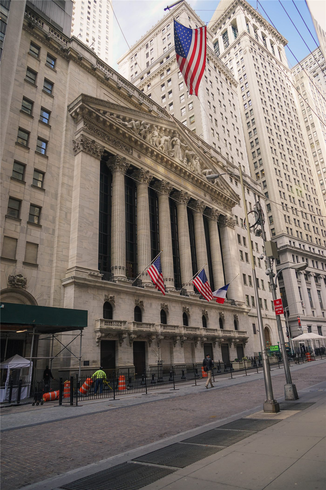

美 증시 휴장… '식스틴스(준틴스)'에 뉴욕증시·나스닥·채권 모두 멈춰
미국 연방 공휴일인 '식스틴스(준틴스)'를 맞아 뉴욕증권거래소와 나스닥, 채권시장이 모두 거래를 멈췄다. 글로벌 자금 흐름의 한 축이 하루 쉬어간다.
진태흥 기자 · 2026.06.19
橋국제·경제

미국이 연방 공휴일 '식스틴스(六月節, 준틴스)'를 맞아 뉴욕증권거래소(NYSE)와 나스닥의 주식 거래를 중단하고 채권시장도 휴장했다고 연합보가 전했다.
광고 문의 · 300×250준틴스는 미국에서 노예해방을 기념하는 날로, 2021년 연방 공휴일로 지정됐다. 세계 최대 금융시장이 쉬는 날에는 아시아·유럽 증시의 거래량이 줄고 환율 변동성도 평소와 다른 흐름을 보이는 경향이 있다.
미국 시장이 멈추는 동안 글로벌 투자자들은 다음 거래일의 재료를 가늠하며 관망에 들어간다. 휴장 전후로는 거래가 한쪽에 몰려 변동성이 커질 수 있어 주의가 필요하다.
華橋時報는 시장 일정과 같은 기초 정보도 빠짐없이 전한다. 미국 증시 일정은 한국·대만 증시와 환율에 연동되므로, 투자와 송금 시점을 정하는 화인 독자에게 실용적인 참고가 된다.
출처·참고 (사실 확인용 — 본문은 직접 재작성)
· 연합보(udn)
· 연합보(udn)